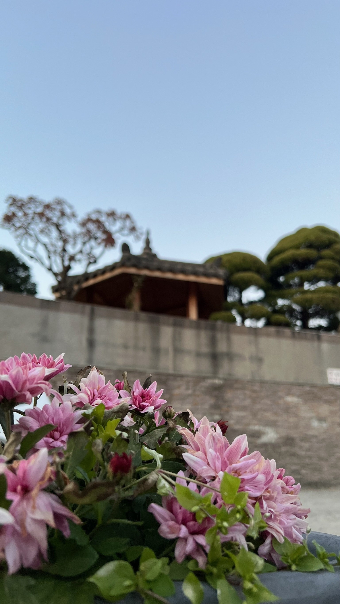
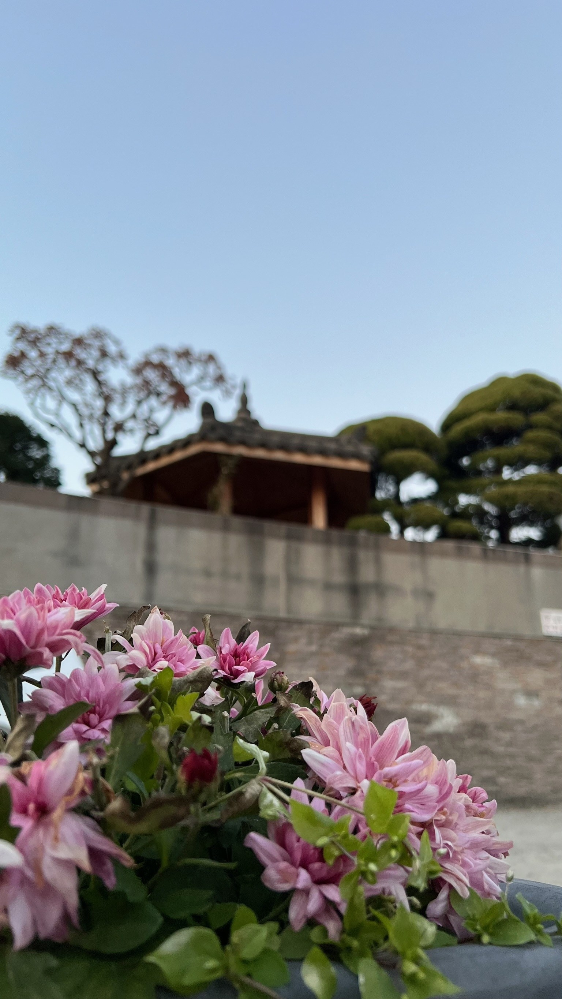

Südkorea
Zwischen Glamour und gebratenem Schweinefleisch liegt die koreanische Seele. Einerseits ist das Land bekannt für Schönheit, Gesundheit und Eleganz. Dagegen stehen etliche BBQ-Restaurants, Clubs und Straßenkiosks. Der Übergang ist teils fließend.
Warum ich da war
Nach Corona zog meine beste Freundin nach Seoul, der Hauptstadt von Südkorea. Da ich mir die Chance nicht entgehen lassen wollte, den Korea-Hype mit eigenen Augen zu sehen, flog ich Ende 2023 los, um sie dort zu besuchen.
Ich war gespannt, wie mir Korea im Vergleich zu Japan gefallen würde. Und ich hatte gedacht, dass es mehr Ähnlichkeiten geben würde. Doch sowohl die Ess- und Trinkkultur als auch der allgemeine Vibe war völlig anders. Weniger höflich, schnelllebiger, rauer, oberflächlicher. Und doch spannend!
Fun Facts
- Koreaner lieben Cafés. Sie müssen hübsch sein, möglichst besonders und trendy.
- Essen gehen ist günstiger als selber kochen. Deswegen sind die Küchen in koreanischen Wohnungen oft kaum benutzt, weil der Lieferservice schneller und billiger ist.
Meine Lieblingsorte
Da die Hauptstadt Seoul so vieles zu bieten hatte, blieb ich den ganzen Urlaub dort. Doch es war nicht langweilig, denn jeder Stadtteil war auf seine Art so anders als die anderen.
Jamsil (Seoul)
Etwas abseits der großen Massen, die sich um Seouls Hauptbahnhof tummeln, war Jamsil etwas normaler. Der große Lotte Tower, das neue moderne Wahrzeichen Jamsils, war sehr beeindruckend. Auch die kleinen Gassen mit all ihren Restaurants und Kneipen waren spannend und immer einen Besuch wert. Besonders schön waren die Spaziergänge um den großen angelegten See beim Lotte Tower.
Seongsu (Seoul)
Hip, modern, verwinkelt. So würde ich Seongsu wohl beschreiben. An jeder Ecke gab es einen neuen Pop-Up-Store, überall gab es moderne Cafés, kleine Buchläden, Fotoautomaten-Shops, Karaoke. Wenn man etwas Ruhe wollte, konnte man in den nahe gelegenen Park gehen. Und wenn man hofft, einen K-Pop-Star zu treffen, dann ist man hier richtig, da in Seongsu die größten Talentagenturen angesiedelt sind.
Itaewon
In Itaewon geht es etwas westlicher zu. Da viele Amerikaner von dem nahegelegenen Militärstützüpunkt vorbeikommen, findet man dort gute mexikanische Restaurants und LGBTQ-freundliche Bars und Clubs. Ich habe mich dort sehr wohlgefühlt, da man dort offener und freundlicher behandelt wurde. Und ich konnte den Schauplatz einer meiner koreanischen Lieblingsserien live sehen!

Weitere Bilder
 
